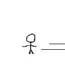
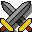
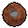
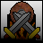
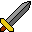

Hello World!
This is my website
click here to see my portfolio
Click here to go to the bottom of my page
My Biography
Hi, my name is Jayden Prevost and here is my biography. I've grown up playing games since i was 4 years old some of my personal favourite games would have to be Red Dead Redemption 2, GTA V, and any horror based games. I'm currently a student in college for Game Programming.
here is one of my favourite characters from my favourite game: Arthur

Arthur Morgan is a character and the main playable protagonist of the video game Red Dead Redemption 2.
A high-ranking member of the Van der Linde gang, Arthur must deal with the decline of the Wild
West while attempting to survive against government forces and other adversaries in a fictionalized representation of the American frontier.
He is portrayed by Roger Clark through performance capture.
| images | gif | gif |
|  |  |
|  |  |
 |  |  |
- Arthur Morgan
- John Marston
- Dutch Vin Di Linde